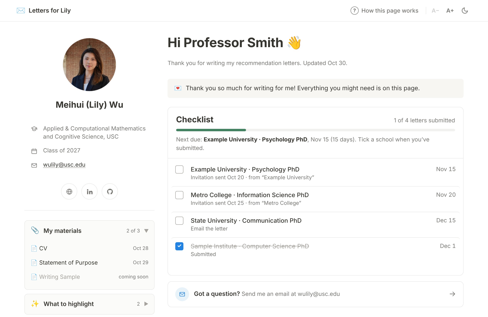
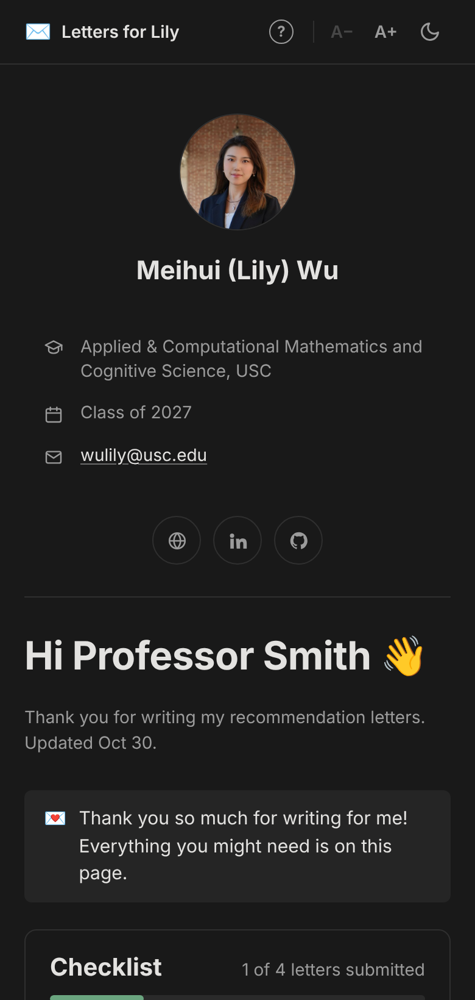
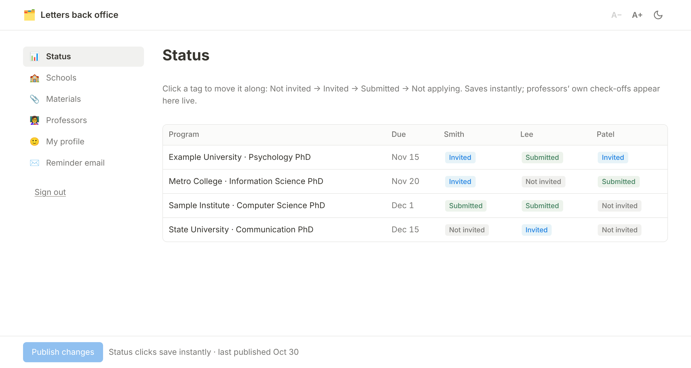

Overview
Role
Product owner and designer; built with an AI coding assistant
Users
4 recommenders, 1 applicant (me)
Scope
15 PhD programs, each with its own deadline and portal
Stack
Plain HTML and JavaScript on GitHub Pages; Firebase (Firestore + Google sign-in)
Timeline
Fall 2026, about four rounds of iteration
Outcome
Live at lilywmh.github.io/rec-letters; open-sourced as a free template
The Problem
A real favor, spread across fifteen portals
Applying to PhD programs means asking people you admire for a favor that takes real time. My four recommenders were each writing for some of my 15 programs, and every program had its own deadline, portal and invitation email. I knew how busy they were, and how many other students were asking the same thing.
So my purpose was simple: I wanted my professors to feel comfortable, and to help me with the least effort possible.
No digging through a long email to find their schools.
No shared spreadsheet full of other people’s rows.
No wondering whether they had already submitted something.
Honestly, I needed it for my own peace of mind too. Without a clear picture I would either nudge too early and feel pushy, or find out too late and panic.
Users & Design Principles
Two users, opposite needs
Recommenders want to open a link, see what is left, and close it in under a minute. I need the full picture: every school against every recommender, plus a fast way to edit and follow up. Five principles came out of the first conversations and held through every later version:
01
One source, many views
A single dataset, with a separate view per recommender, instead of copies that drift apart.
02
Show only what is theirs
Each professor sees only the schools they write for, at their own private link.
03
Readable in ten seconds
Deadlines and next steps first; background material one click away.
04
Link, don’t upload
My CV and statements stay in Google Drive, so updating a file never means resending anything.
05
Make status trustworthy
Show when each item was last updated, so a checkmark means something.
I also chose how professors would use it: one link sent once at the start, then opened whenever they want. No accounts, no logins, no notifications.
How the Design Evolved
Four versions, each from looking at it as they would
The tool went through four versions. Each one was triggered by a specific problem I noticed when I looked at it as a recommender would.
-
1
Read-only status page
Prompted by: I needed something fast
A hosted page per professor; I owned all status
-
2
A real letter packet
Prompted by: status alone didn’t help them write
Checklist content: materials, talking points, submission steps
-
3
Own domain, own data
Prompted by: odd link, privacy worries
Notion-like layout on GitHub Pages; data moved to Firebase
-
4
Familiar and warm
Prompted by: it still didn’t feel intuitive
Standard academic layout, photo, welcome card, dark mode
Version 1
A read-only status page
The first version was a quick hosted page for each professor showing their schools and deadlines. I kept all status myself and professors only read it. It worked, but it made me the bottleneck: I could only mark a letter done after a portal emailed me, and professors had no way to tell me they had finished.
So the first real change was letting professors update status themselves. One tap per school, nothing else editable.
Version 2
From tracker to letter packet
A status list tells a professor what is due but not what to write. I folded in the contents of a standard recommendation packet: deadlines, submission instructions, CV, a brag sheet with course context, transcript, personal statement and the talking points I hoped each person would cover. Each professor’s talking points are written for them, because each knows a different part of my work.
Version 3
A home of my own
Two things bothered me. The page lived on a domain my professors wouldn’t recognize, and an emailed link to an unfamiliar site looks like spam. I moved it to my own GitHub Pages site, next to my personal website.
That raised a privacy question: a public repository would expose my school list, my recommenders and my notes. The answer was to keep the repository code-only and put every piece of personal data in a database protected by access rules (see Privacy below).
I also redesigned the page in a Notion-like style, separating reference information from the checklist so the two never compete for attention.
Version 4
Familiar beats clever
My honest reaction to version 3 was that it did not look updated and was not intuitive. Novel layouts make people think. I rebuilt it on the most common pattern I could find, the academic homepage used by many researchers:
- A top bar with my name, a plain How this page works link, and controls for text size and dark mode
- A left sidebar with a round photo, my name, major, class year, email and icon links, so they remember who I am at a glance
- Collapsible sections for my materials, what to highlight, our work together and how to submit
- The checklist on the right, sorted by deadline, with a progress bar
- A short welcome card on first visit, signed by me, explaining the page in three lines
- A Got a question? Send me an email box with a direct mail link
The rest was detail work: more breathing room in the margins, icons only where a label added nothing, and a tighter photo crop so my face reads clearly at small sizes.


The Back Office
The complexity moved where only I see it
The recommender page is simple because the complexity moved to a back office only I can open. I asked for it as soon as I realized that changing a link or dropping a school should not mean editing code.
Status table
Every school against every recommender. Clicking a cell cycles it through to do, invited, submitted and not applicable, and saves at once. Professors’ own checkmarks appear here live.
Editors
Schools and deadlines, materials, each professor’s notes and talking points, and my profile. Edits stay in a draft until I press Publish changes, so a half-finished edit never reaches a professor.
Reminder emails
Ready-to-send templates for a friendly check-in, a deadline within a week, and a thank-you, filled in with each professor’s remaining schools.
Two sign-ins
Both my personal and my university Google accounts can open it.

Privacy by Architecture
Privacy that doesn’t depend on people not looking
I did not want privacy to depend on people not looking. The repository is public, so it holds only code; every school, name and note lives in Firestore behind access rules.
Each recommender’s page is addressed by a long random token. Anyone with that exact link can read that one page and change only its checkmarks.
Nobody but me can list pages or read the master data, which holds every school and recommender.
My starter data file stays on my computer and is ignored by Git.
Materials are Google Drive links, so they are only as visible as their own sharing settings.
Sharing It as a Template
Almost every applicant has this problem
Once it worked for me, I realized almost every applicant has this same problem, so I cleaned it up for anyone to reuse. Every personal detail moved into one config file, and the data is loaded once through the back office, so the code holds nothing about me.
- ✓Free to run: GitHub Pages and Firebase’s free tier, no build step
- ✓About fifteen minutes to set up, with a step-by-step guide in English and in Chinese
- ✓Screenshots made with example schools and recommenders, never real ones
- ✓MIT licensed at github.com/lilywmh/rec-letters
What I Learned
A lesson in caring about someone else’s time
This started as a way to stay organized and turned into a lesson in caring about someone else’s time.
Kindness is a design decision
Every feature I cut made the page easier for the person doing me a favor. The welcome card, my photo and the plain “send me an email” box add almost nothing technically, but they make the page feel like it came from a person, not a system.
Familiar beats clever
My most original layout was my least usable one. People already know how an academic homepage works, so borrowing that pattern let them skip learning mine.
Trust has to be visible
A checkmark only helps if people believe it. Showing when things were last updated, and letting professors mark their own submissions, turned the page from my record into a shared one.
Privacy belongs in the structure
Keeping the repository code-only and putting the rules on the data meant I never had to rely on a link staying secret by accident.
Look at it as they would
Every version improved because I stopped reviewing it as the builder and opened it the way a busy professor would, on a phone, between meetings, with one minute to spare.